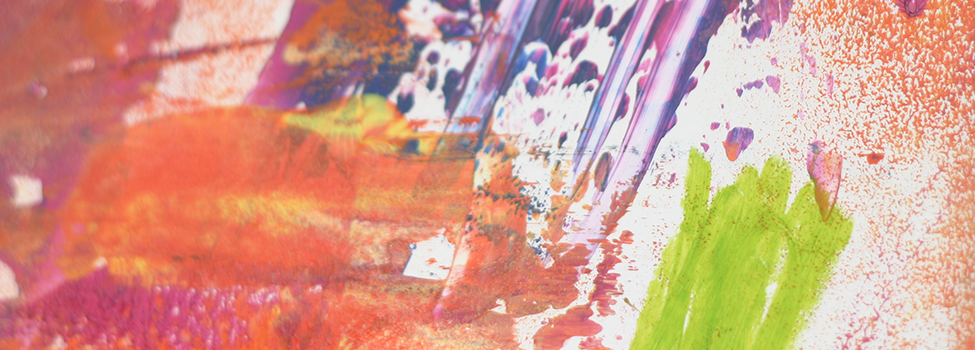
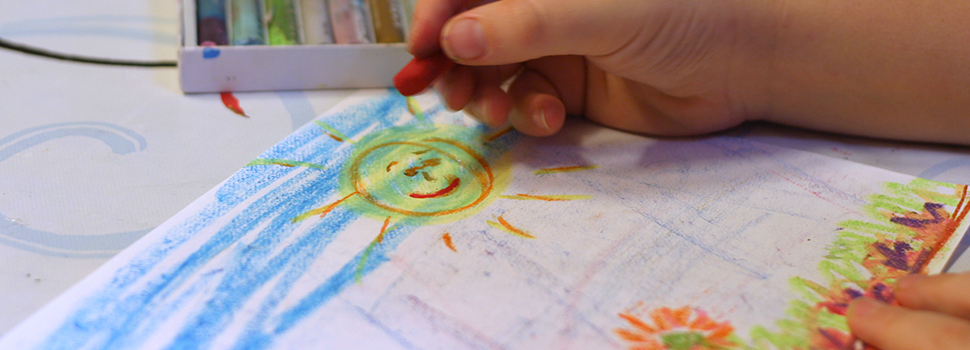
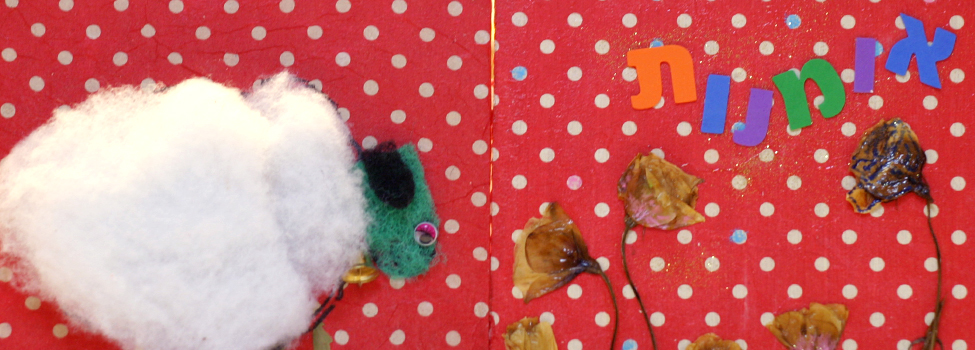
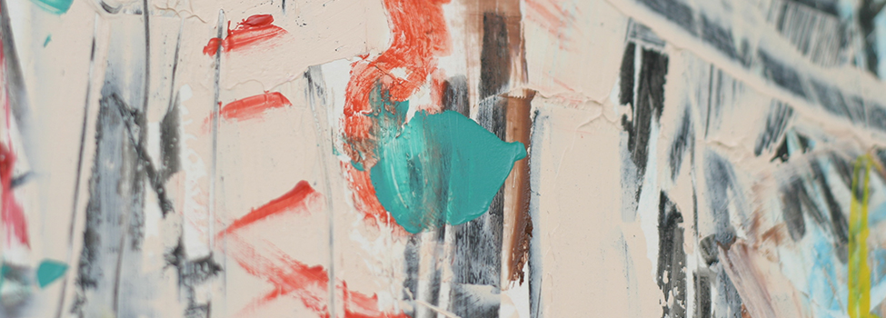
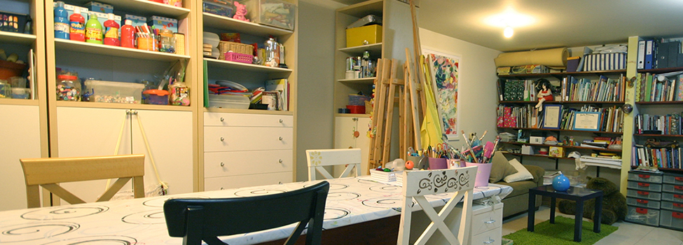
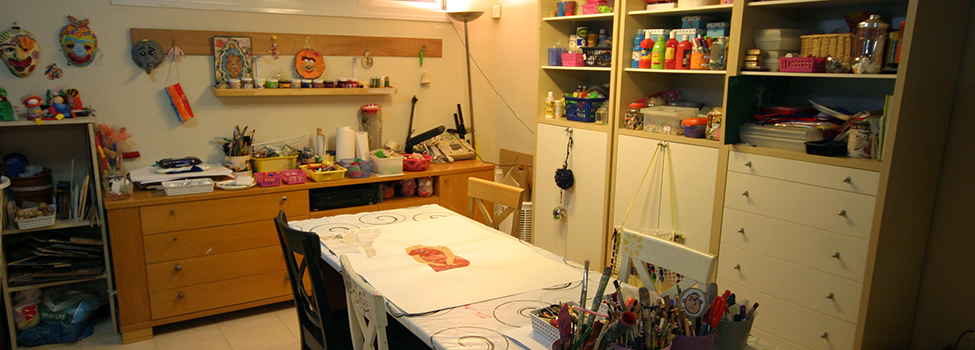

טיפול באומנות מאפשר ביטוי ושיחה במילים וביצירה במטרה להשיג צמיחה ושינוי. ציור, פיסול ויצירה בחומרים נוספים מאפשרים לילדים להתבטא ולתאר את המתרחש בעולמם. העיסוק ביצירה מזמין להעיז להתנסות בדברים חדשים. הילדים לומדים לבטא משאלות, רצונות וגם קשיים ופחדים. לאורך השנים גיליתי שילדים רבים אינם מרגישים בטוחים לתפוס מקום ולפתח עמדות ורצונות עצמאיים מפני החשש מתגובתם של ילדים אחרים ושל המבוגרים שלצידם. ההימנעות והתסכול יוצרים כדור שלג של חוויות מחלישות. בטיפול באומנות, דרך השיח היצירתי נפתח שביל אל ליבם של הילדים ואני מזמינה אותם לשוחח ולהתבונן על הקשר שבין היצירה והמציאות החיצונית.
חדר הטיפול באומנות הוא מקום בטוח ומכיל שבו לדמיון וליצירתיות מקום מרכזי. בחדר הטיפול יש מגוון של חומרים: צבעים, פלסטלינה, חימר, גבס, ניירות שונים וחומרים למיחזור. אני מעודדת את הילדים להשתמש בדמיון ובאסוציאציות שהחומרים מעוררים. באווירה נעימה ומקבלת הם לומדים שרגשותיהם, רצונותיהם ושאיפותיהם לגיטימיים. ביחד אנחנו ממציאים כלים ופתרונות אישיים להתמודדות יעילה.

להורים תפקיד משמעותי בתהליך השינוי. אני נוהגת לשתף את ההורים בהתבוננות ובהתרשמות מהתהליך ולהדריך בנושאים הקשורים לצמיחתו ולרווחתו של הילד.
בנוסף לסטודיו הפרטי שלי, אני עובדת כמטפלת באומנות במסגרות חינוכיות שונות. בנוסף, התמחיתי בעבודה עם ילדים בעלי צרכים פיזיים מיוחדים, עיוורים ולקויי ראייה, עם ילדים שסובלים מלקויי למידה, ועם ילדים שהמציאות יצרה אצלם קשיים רגשיים.
{kind=link}
{kind=link}
{kind=link}